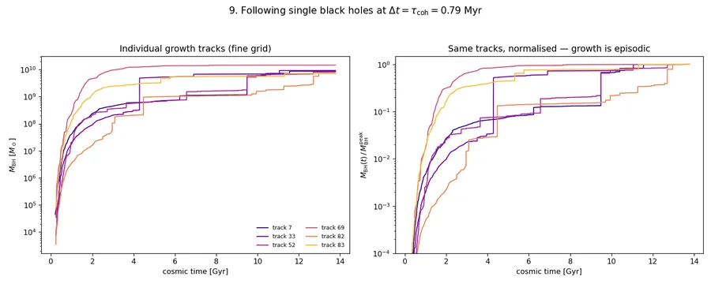
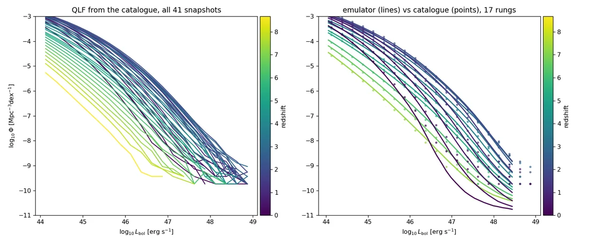
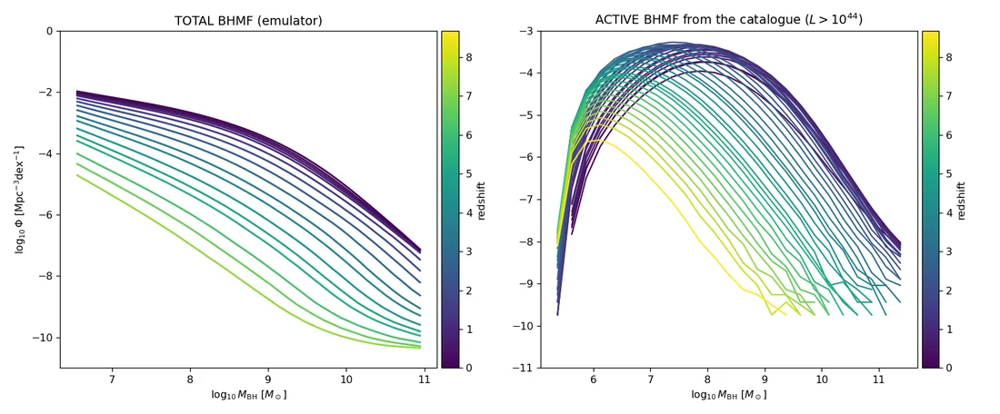
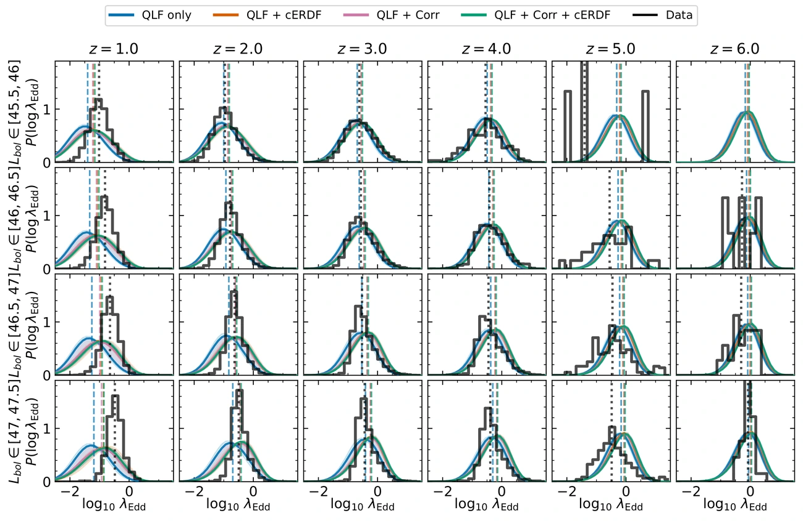
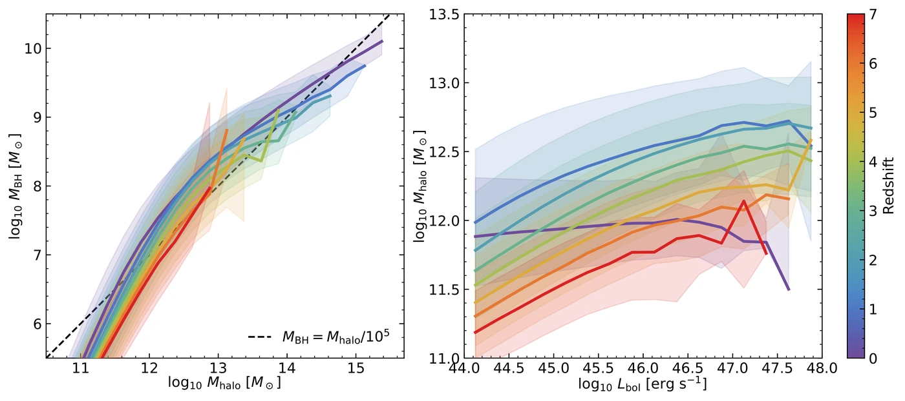

The paper
Tracing individual black hole growth histories and quasar lightcurves in an N-body Universe — Pizzati, Hennawi, Schaye et al.
{% if site.data.baqaro.paper_url %} Read it → {% else %} In preparation → {% endif %}BAQARO is a model for how supermassive black holes grow and light up as quasars. It attaches a black hole to every dark matter halo in a 2800 Mpc box, grows it through stochastic accretion tied to the halo's own assembly history, and follows the whole population from the first seeds down to the present day — about a billion black holes, each with its own growth history and light curve.
The model runs on merger trees from the FLAMINGO dark-matter-only simulation, and its six free parameters are fit jointly to three observables: the bolometric quasar luminosity function, the conditional Eddington ratio distribution at fixed luminosity, and quasar clustering. Everything on this page — the code, the fitted posteriors, and a per-object quasar catalogue — is public.
Tracing individual black hole growth histories and quasar lightcurves in an N-body Universe — Pizzati, Hennawi, Schaye et al.
{% if site.data.baqaro.paper_url %} Read it → {% else %} In preparation → {% endif %}The full pipeline: forward model, Gaussian-process emulators, likelihoods and MCMC, and the scripts that make every figure in the paper.
Browse on GitHub →Summary statistics, portable emulators, MCMC chains, and a catalogue of 360 million quasars across 41 redshifts.
What is in it →
Individual growth histories. Each line is one black hole. Joint posterior over the six free parameters.
Joint posterior over the six free parameters.




Two results are worth pulling out. The predicted \(M_{\rm BH}\)–\(M_{\rm halo}\) relation stays approximately constant with redshift, with scatter below about 0.3 dex — but with an extended tail towards high black hole mass, and it is that tail which produces the luminous quasars we actually see. And the model is honest about where it fails: the faint end of the luminosity function, the mean of the Eddington-ratio distribution, and quasar clustering at \(z\approx4\) all show residual discrepancies. These are documented rather than buried — see the limitations page.
Six numbers control the whole model. Drag one and everything below is recomputed in your browser — no server, no simulation, a few milliseconds. The dashed lines are always the best fit, so you can see what you changed.
The first row of panels is what the model predicts, computed from the released Gaussian-process emulators. The second row is how it works: the accretion, seeding and variability prescriptions in closed form. If a prediction moves and you want to know why, the answer is in the second row.
Sliders span the emulator’s training box. Outside it the Gaussian process extrapolates and should not be trusted.
The whole model is controlled by six numbers. These are the adopted best-fit values from the joint fit:
| Parameter | Value | Meaning |
|---|---|---|
| \({{ p.sym }}\) | {{ p.val }} | {{ p.desc }} |
numpy and h5py. No pickles,
so they will still load in ten years.
Every file carries a provenance group recording the exact
parameters, code revision and build time that produced it, and the release
ships a manifest of SHA-256 checksums.
Full contents, loading snippets and the caveats are on the data release page. Predicting a luminosity function takes about ten lines and no modelling code:
from predict import load, predict
emu = load("emulator_qlf.hdf5")
y = predict(emu, [-1.2355, 0.8327, 0.5075, 5.8947, -6.4694, 0.5056])
# y[0] is log10(QLF), shape (n_redshift, n_Lbins); grids are in emu.axes
If you use BAQARO, please cite the model paper. If you use the data release,
please cite its DOI as well{% if site.data.baqaro.data_doi %} ({{ site.data.baqaro.data_doi }}){% endif %}.
Code {% if site.data.baqaro.data_url %} Data {% endif %} {% if site.data.baqaro.paper_url %} Paper {% endif %}